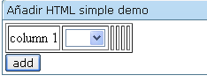
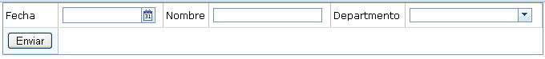
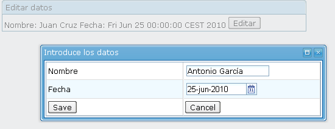

Sesión 8: Integración con XHTML y servlets
ZUML y XHTML
Es posible incluir etiquetas HTML dentro de una página ZUML. Hay que tener siempre presente que la página ZUML es procesada en el servidor para construir una página HTML que se envía de vuelta al cliente. Veremos en este apartado cómo definir etiquetas HTML que sean colocadas tal cual en la página resultante.
Hay distintas formas de utilizar etiquetas HTML junto con los componentes ZUL en la misma página ZUML.
La primera forma es utilizar el componente html para embeber en él etiquetas HTML. Con este enfoque, las etiquetas HTML son sencillamente el contenido del componente html. Son enviadas directamente al cliente y no tienen ningún sentido específico para ZK.
En segundo lugar, se puede usar el espacio de nombres XHTML (http://www.w3.org/1999/xhtml/) para especificar un componente del conjunto XHTML. De esta forma, pueden convivir en una misma página del espacio de nombres ZUL (http://www.zkoss.org/2005/zul) y componentes XHTML. ZK procesa ambos tipos de componentes en un mismo árbol XML.
Por último, es posible utilizar el espacio de nombres Native (http://www.zkoss.org/2005/zk/native) para hacer que ZK envíe el componente tal cual de vuelta al cliente, en lugar de procesarlo como un componente ZK.
El componente html
La manera más sencilla es usar un component ZUL llamado html en el que podemos incluir etiquetas XHTML que queremos enviar directamente al navegador. Es conveniente utilizar la sentencia <[CDATA[ para hacer el texto compatible con XML (si no lo hiciéramos asi, el parser de ZK interpretaría las etiquetas HTML como etiquetas del documento, en lugar de verlas como texto a procesar). Dentro del contenido se permite utilizar expresiones EL.
<window border="normal" title="Html Demo">
<html>
<![CDATA[
<h4>Hola, ${parent.title}</h4>
<p>Este es el contenido del componente html.</p>
]]>
</html>
</window>
En el ejemplo el texto <h4> ... </p> es el contenido del elemento html (es posible obtener este contenido desde Java utilizando el método getContent de la clase org.zkoss.zul.Html).
También es posible utilizar el elemento attribute de ZK para especificar el fragmento XHTML en lugar de con CDATA:
<window border="normal" title="Html Demo">
<html>
<attribute name="content">
<h4>Hola, ${parent.title}</h4>
<p>Este es el contenido del componente html.</p>
</attribute>
</html>
</window>
El componente html genera la etiqueta HTML span para englobar el contenido. En el ejemplo, genera las siguientes etiquetas HTML que envía al navegador:
<span id="z_4a_3"> <h4>Hola, Html Demo</h4> <p>Este es el contenido del componente html.</p> </span>
El componente html no es distinto de cualquier otro componente ZUL. Por ejemplo, es posible especificar el estilo CSS, así como cambiar el contenido dinámicamente:
<zk>
<html id="h" style="border: 1px solid blue;background: yellow">
<![CDATA[
<ul>
<li>Contenido nativo del browser</li> </ul>
]]>
</html>
<button label="change" onClick="h.setContent("Hola, actualizamos")" />
</zk>
Hay que notar que debido a que se utiliza span para embeber las etiquetas HTML el siguiente fragmento de código es incorrecto:
<zk>
<html>
<![CDATA[<![CDATA[
<ul>
<li>
]]>
</html>
<textbox />
<html>
<![CDATA[<![CDATA[
</li>
</ul>
]]>
</html>
</zk>
Si necesitamos generar las etiquetas HTML directamente, sin la etiqueta span podemos utilizar el espacio de nombres Native que explicamos más adelante.
El espacio de nombres Native
El espacio de nombres Native para denominar elementos XML de la página ZUML que el cargador de ZK manda al navegador directamente sin convertirlos en un componente ZK. Por ejemplo,
<n:ul xmlns:n="http://www.zkoss.org/2005/zk/native"> <n:li> <textbox/> </n:li> <n:li> <textbox/> </n:li> </n:ul>
generará las siguientes etiquetas HTML para el navegador
<ul> <li> <input id="z_a3_2"/> </li> <li> <input id="z_a3_5"/> </li> </ul>
Las etiquetas <input> se generan por el componente textbox. A diferencia del textbox en el ejemplo de arriba, el cargador de ZK no crea un componente por cada ul y li. En vez de eso, esas etiquetas se envían al cliente directamente donde se reconocen como etiquetas HTML.
Los elementos generados con el espacio de nombres Native son enviados directamente al cliente, no son componentes ZK y, por tanto, no son considerados tampoco como elementos ZK en el cliente. La ventaja es que se mejora el rendimiento en términos de memoria y de tiempo de procesamiento. Por otro lado, la desventaja es que no podemos acceder a ellos ni cambiarlos dinámicamente. Por ejemplo, el siguiente trozo de código es incorrecto, ya que no hay ningún componente llamado x.
<n:ul id="x" xmlns:n="http://www.zkoss.org/2005/zk/native"/> <button label="add" onClick="new Li().setParent(x)"/>
Si queremos cambiar dinámicamente los elementos HTML es necesario utilizar el espacio de nombres XHTML tal y como se describe en el siguiente apartado.
El espacio de nombres XHTML
El espacio de nombres XHTML (http://www.w3.org/1999/xhtml/) representa el conjunto de componentes XHTML, de la misma forma que el espacio de nombres ZUL (http://www.zkoss.org/2005/zul) representa el conjunto de componentes ZUL. De esta forma, un elemento XML especificado con el espacio de nombres XHTML simplemente denota un componente XHTML que será creado por el cargador de ZK. Por ejemplo, la siguiente sentencia especifica un componente ul del espacio de nombres http://www.w3.org/1999/xhtml/. El cargador de ZK reconoce ese componente como un elemento XHTML y genera su código correspondiente.
<h:ul xmlns:h="[http://www.w3.org/1999/xhtml http://www.w3.org/1999/xhtml]">
Veamos un ejemplo.
<?page title="Añadir HTML" contentType="text/html;charset=UTF-8"?>
<zk>
<window id="A" title="Añadir HTML demo" border="normal" xmlns:h="http://www.w3.org/1999/xhtml">
<h:table border="1">
<h:tr id="row1">
<h:td>column 1</h:td>
<h:td>
<listbox id="list" mold="select">
<listitem label="AA"/>
<listitem label="BB"/>
</listbox>
</h:td>
</h:tr>
</h:table>
<button label="add" onClick="row1.appendChild(new org.zkoss.zhtml.Td())"/>
</window>
</zk>

A diferencia del componente html, donde las etiquetas HTML se almacenaban como contenido de la etiqueta, el cargador de ZK crea un componente por cada etiqueta HTML. En el caso del ejemplo, se crean los componentes table, tr y td dentro del árbol de componentes definido por el fichero ZUML. La ventaja principal es que podemos manipular cada etiqueta HTML dinámicamente de la misma forma que hacemos con las etiquetas ZUL. En el ejemplo, la acción del botón modifica la estructura del árbol de componentes y añade otro componente td como hijo del componente tr. La desventaja de este enfoque es que el HTML ocupa espacio y tiempo de procesamiento al cargar la página inicial, ya que es tratado como un componente ZK más.
Una versión algo más complicada, en la que se utiliza código zscript para obtener el valor seleccionado de la lista y añadirlo dentro de la nueva celda.
<?page title="Añadir HTML" contentType="text/html;charset=UTF-8"?>
<zk>
<window id="A" title="Añadir HTML demo" border="normal" xmlns:h="http://www.w3.org/1999/xhtml">
<zscript>
import org.zkoss.zhtml.Text;
import org.zkoss.zhtml.Td;
void addTd() {
Td td = new Td();
Listitem listbox = list.getSelectedItem();
if (listbox != null) {
Text text = new Text();
text.setValue(list.getSelectedItem().getLabel());
td.appendChild(text);
}
row1.appendChild(td);
}
</zscript>
<h:table border="1">
<h:tr id="row1">
<h:td>column 1</h:td>
<h:td>
<listbox id="list" mold="select">
<listitem label="AA"/>
<listitem label="BB"/>
</listbox>
</h:td>
</h:tr>
</h:table>
<button label="add" onClick="addTd()"/>
</window>
</zk>

El componente include
El componente include se utiliza para incluir la salida generada por un servlet. El servlet puede ser cualquier cosa, incluyendo JSF, JSP e incluso otra página ZUML.
<window title="include demo" border="normal" width="300px"> Hola Mundo! <include src="/userguide/misc/includedHello.zul"/> <include src="/html/frag.html"/> </window>
Al igual que el resto de propiedades, podríamos cambiar dinámicamente el atributo src para incluir la salida de servlets diferentes en tiempo de ejecución. Si la página incluida es otra página ZUML, es posible acceder a los componentes de la página incluida como si fueren parte de la página principal.
Hay dos formas de pasar valores a la página incluida. Primero, podemos utilizar la URL con el símbolo de interrogación:
<include src="mypage?some=something"/>
En la página incluida podemos acceder a los parámetros con el método getParameter de la interfaz Execution. También podemos usar la variable param en expresiones EL.
${param.some}
De esta forma sólo es posible pasar objetos de tipo String a las páginas. Es posible también pasar otro tipo de valores utilizando la siguiente expresión:
<include src="mypage" some="something" another="${expr}"/>
De esta forma, el objeto resultante de la expresión EL se guarda en el atributo another. En la página incluida se puede acceder a él utilizando el método getAttribute de la interfaz Execution o ServletRequest. En expresiones EL se puede usar la variable requestScope para acceder al valor:
${requestScope.some}
Cómo trabajar con formularios HTML y con servlets
El modelo basado en eventos es simple y potente, pero podría no ser práctico reescribir todos los servlets para reemplazarlos con escuchadores de eventos. Vamos a ver cómo trabajar en ZK con aplicaciones web legacy que utilizan formularios HTML que invocan a servlets con una URL y un conjunto de parámetros. Para trabajar con este tipo de aplicaciones podemos sustituir los componentes HTML por componentes ZK, pero mantenemos la llamada al servlet utilizando la propiedad name en los componentes ZK. Por ejemplo,

<?page title="Grid servlet" contentType="text/html;charset=UTF-8"?>
<zk>
<window xmlns:h="http://www.w3.org/1999/xhtml">
<h:form method="post" action="/MiServlet">
<grid width="700">
<rows>
<row>
Fecha
<datebox name="fecha" />
Nombre
<textbox name="nombre" />
Departmento
<combobox name="departmento">
<comboitem label="I+D" />
<comboitem label="Fabricación" />
<comboitem label="Logística" />
</combobox>
</row>
<row>
<h:input type="submit" value="Enviar" />
</row>
</rows>
</grid>
</h:form>
</window>
</zk>
Vemos que seguimos utilizando el componente form utilizando el espacio de nombres XHTML. El atributo action indica la URL del servlet. En los componentes ZUL datebox, textbox y combobox utilizamos el atributo name. Una vez que el usuario presiona el botón Enviar se envía una petición al servlet con la siguiente cadena de petición:
/mi-servlet?fecha=2006%2F03%2F01&nombre=Bill+Gates&departmento=Fabricación
Por tanto, el servlet seguirá funcionando de la forma habitual sin ninguna modificación.
Todos los componentes de tipo entrada soportan la propiedad name. Lo hacen, por ejemplo, textbox, datebox, decimalbox, intbox, combobox, bandbox, slider and calendar. Además, otro tipo de componentes como cajas de listas (list boxes) y controles de árbol (tree controls) también soportan la propiedad name. Si la propiedad multiple es true y el usuario selecciona múltiples ítems, entonces se envían múliples parejas nombre/valor.
<listbox name="who" multiple="true" width="200px">
<listhead>
<listheader label="name"/>
<listheader label="gender"/>
</listhead>
<listitem value="mary>
<listcell label="Mary"/>
<listcell label="FEMALE"/>
</listitem>
<listitem value="john">
<listcell label="John"/>
<listcell label="MALE"/>
</listitem>
<listitem value="jane">
<listcell label="Jane"/>
<listcell label="FEMALE"/>
</listitem>
<listitem value="henry">
<listcell label="Henry"/>
<listcell label="MALE"/>
</listitem>
</listbox>
Si tanto John como Henry son seleccionados la cadena de petición será la siguiente:
who=john&who=henry
Hay que hacer notar que para usar cajas de listas y controles de árbol con la propiedad name tenemos que especificar la propiedad value para listitem y treeitem respectivamente. Estos valores son los que se envían a los servlets.
La ventaja de este enfoque es que permite mejorar las interfaces de usuario de las aplicaciones legacy, incluyendo características de interfaces ricas y después usando los servlets que hemos heredado. Por ejemplo, podríamos añadir dinámica filas a un grid, incluyendo en cada fila campos de entrada de texto con la propiedad name. El servlet al que se enviaría la petición sería el mismo que ya tenemos funcionando.
Objetos implícitos
Existen un conjunto de objetos implícitos que pueden ser utilizados en código zscript o en expresiones EL. Por ejemplo, el objeto self es una instancia de la clase org.zkoss.zk.ui.Component que contiene el componente que está siendo procesado:
<button label="Try" onClick="alert(self.label)
O, por ejemplo, el objeto event es el evento que está siendo procesado. La expresión anterior es equivalente a:
<button label="Try" onClick="alert(event.target.label)"/>
La siguiente tabla muestra una lista de los objetos implícitos en ZK:
| Nombre variable | Clase | Descripción |
| self | org.zkoss.zk.ui.Component | El componente que se está procesando. |
| spaceOwner | org.zkoss.zk.ui.IdSpace | El espacio ID de este componente. Lo mismo que self.spaceOwner. |
| page | org.zkoss.zk.ui.Page | La página. Lo mismo que self.desktop. |
| desktop | org.zkoss.zk.ui.Desktop | El escritorio. Lo mismo que self.desktop. |
| execution | org.zkoss.zk.ui.Execution | La ejecución actual. |
| session | org.zkoss.zk.ui.Session | La sesión actual. |
| application | org.zkoss.zk.ui.WebApp | La aplicación web. |
| componentScope | java.util.Map | Un mapa de atributos definidos en el componente. Es lo mismo que el método getAttributes en la interfaz org.zkoss.zk.ui.Component interface. |
| spaceScope | java.util.Map | Un mapa de atributos definidos en el espacio de identificadores que contiene este componente. |
| pageScope | java.util.Map | Un mapa de atributos definidos en la página. Es el mismo que el método getAttributes en la interfaz org.zkoss.zk.ui.Page. |
| desktopScope | java.util.Map | Un mapa de atributos definidos en el escritorio. Es lo mismo que el método getAttributes en la interfaz org.zkoss.zk.ui.Desktop. |
| sessionScope | java.util.Map | Un mapa de atributos definidos en la sesión. Es lo mismo que el método getAttributes en la interfaz org.zkoss.zk.ui.Session. |
| applicationScope | java.util.Map | Un mapa de atributos definidos en la aplicación web. Es lo mismo que el método getAttributes en la interfaz org.zkoss.zk.ui.WebApp. |
| requestScope | java.util.Map | Un mapa de atributos definidos en la petición. Es lo mismo que el método getAttributes en la interfaz org.zkoss.zk.ui.Execution. |
| param | java.util.Map | Un mapa de atributos pasados en la cadena de la petición HTTP. |
| arg | java.util.Map | El argumento arg pasado al método createComponents en la clase org.zkoss.zk.ui.Executions. Es lo mismo que self.desktop.execution.arg. Notar que arg sólo está disponible en el momento de creación de los componentes de la página incluida (el primer argumento de createComponents). Por otro lado, todos los eventos, incluido onCreate, se procesan después. Así, si queremos acceder a arg en el escuchador del evento onCreate, tenemos que usar el método getArg de la clase org.zkoss.zk.ui.event.CreateEvent. |
| each | java.lang.Object | El item actual de la colección en el atributo forEach. |
| forEachStatus | org.zkoss.zk.ui.util.ForEachStatus | El status de la iteración. |
| event | org.zkoss.zk.ui.event.Event | El evento actual. Sólo está disponible en el escuchador del evento. |
Duración de la vida de distintos elementos
Muchos de los objetos anteriores se refieren al ámbito en el que se ejecuta la aplicación en el servidor. No tenemos que olvidar que seguimos estando en una aplicación web soportada por servlets, con lo que los objetos existentes en ese API siguen estando aquí, aunque encapsulados por otras clases. Por ejemplo, el objeto Execution encapsula una petición HTTP (similar al request de JSP).
La interfaz org.zkoss.zk.ui.Execution proporciona información acerca de la petición actual, tales como sus parámetros. Para obtener la ejecución actual, podemos llamar al método estático getCurrent de la clase. El siguiente ejemplo muestra el nombre del servidor:
<window>
<zscript>
String sn = Executions.getCurrent().getServerName();
</zscript>
The server is: ${sn}
</window>
Otro ejemplo, el fichero getparameter.zul:
<window>
1:${param.nombre}
<button id="b1"/>
<zscript >
b1.label = Executions.getCurrent().getParameter("nombre");
</zscript>
</window>
Podemos probarlo pasando un parámetro nombre:
http://localhost:8080/getparameter.zul?nombre=pepito
Podemos hacer lo mismo utilizando el objeto implícito execution:
b1.label = execution.getParameter("nombre");
El ámbito de los objetos es el siguiente, de más pequeño a mayor:
- page: una página, el ámbito más pequeño.
- execution: procesa peticiones del cliente que pueden englobar más de una página.
- desktop: todas las páginas de una misma URL que residen en la misma página del navegador.
- session: desde que el usuario visita la web hasta que la abandona o se termina el tiempo. Una sesión puede contener distintas páginas y escritorios.
- application: vive desde que la aplicación comienza hasta que termina. Global a distintas sesiones y usuarios.
Hay que notar que si pulsamos "F5" para refrescar la página web, obtenemos un escritorio distinto pero permanecemos en la misma sesión.
La interfaz Execution
La interfaz org.zkoss.zk.ui.Execution proporciona una capa de abstracción alrededor del concepto de petición del cliente (ServletRequest en las aplicaciones web Java). Cuando una petición se envía desde un cliente el servidor construye un objeto Execution que mantiene la información relevante de la ejecución de la respuesta y luego sirve la petición. Debido a que la petición puede llegar de HTTP o de cualquier otro protocolo, la interfaz Execution abstrae este concepto.
Una petición de un cliente, por ejemplo HttpServletRequest, puede consistir en múltiples peticiones de ZK (AuRequest). Sin embargo, estas peticiones deben tener como objeto la misma página.
ZK define el objeto implícito execution que contiene la petición actual. Este objeto se puede usar para obtener la sesión actual (getSession()), sus atributos (getAttributes()), datos sobre el navegador que hace la petición (getUserAgent()) o los parámetros de la petición (getParameterMap()). Por ejemplo:
<?page title="Hola navegador" contentType="text/html;charset=UTF-8"?>
<zk>
<window title="Hola navegador" border="normal">
${execution.userAgent}:
${execution.localName}:
${execution.serverPort}:
${execution.parameterMap}:
${param.par1}
</window>
</zk>
También puede ser utilizado para obtener elementos relacionados con ZK, como el escritorio desde el que se lanza la petición (getDesktop()) o la definición de una página (getPageDefinition()).
Otra interfaz relacionada es Executions, que proporciona métodos relacionados con la ejecución actual. Por ejemplo, podemos utilizarla para construir nuevos componentes y añadirlos a la página actual.
Vamos a crear una ventana que se superpone para modificar datos.

Vamos a utilizar dos páginas. En la página principal index.zul creamos una sencilla ventana en la que se muestran los valores a modificar.
Los valores que vamos a modificar se definen como atributos de la sesión. De esta forma pueden ser compartidos entre distintas páginas de la aplicación. En la página inicial comprobamos si los valores existen en la sesión y si no, los inicializamos.
Para editar los datos llamamos el método createComponentes de la interfaz Executions. Este método realiza una petición y accede a la página edit.zul en la que se construye la ventana de edición. Después modifica ciertos atributos de la ventana, haciéndola modal para obligar al usuario a rellenar los datos (o cancelar).
<?page id="editData" title="Editar datos" cacheable="false"
language="xul/html" zscriptLanguage="Java" contentType="text/html;charset=UTF-8"?>
<zk>
<zscript><![CDATA[
nombre = session.getAttribute("nombre");
fecha = session.getAttribute("fecha");
if (nombre == null) {
session.setAttribute("nombre","Pepe");
session.setAttribute("fecha", new Date());
}
public void showEdit() throws Exception {
Window win = (Window) Executions.createComponents("edit.zul", null, null);
win.setTitle("Introduce los datos");
win.setClosable(true);
win.setMaximizable(true);
win.doModal();
}
]]></zscript>
<window id="win" border="normal" width="810px" minheight="300">
<label value="Nombre: "/>
${sessionScope["nombre"]}
<label value="Fecha: "/>
${sessionScope["fecha"]}
<button label="Editar" onClick="showEdit()" />
</window>
</zk>
En la página edit.zul se abre una ventana en la que se pueden modificar los datos. Para ello se obtienen los datos de la sesión y se muestran en campos para que el usuario los modifique. Asociamos al botón la función submit() que guarda los datos en la sesión y vuelve a cargar la página principal llamando al método sendRedirect de la ejecución (petición) actual.
<?page title="Edit" contentType="text/html;charset=UTF-8"?>
<zk>
<window id="editWin" title="Editar datos" border="normal">
<zscript><![CDATA[<![CDATA[
sNombre = session.getAttribute("nombre");
sFecha = session.getAttribute("fecha");
public void submit() {
miNombre = nombre.getValue();
miFecha = new java.util.Date(fecha.getValue().getTime());
session.setAttribute("nombre", miNombre);
session.setAttribute("fecha", miFecha);
Executions.getCurrent().sendRedirect("index.zul");
editWin.detach();
}
]]></zscript>
<grid fixedLayout="true" width="450px">
<rows>
<row>
<label value="Nombre"/>
<textbox id="nombre" constraint="no empty" value="${sNombre}"/>
</row>
<row>
<label value="Fecha"/>
<datebox id="fecha" constraint="no empty" value = "${sFecha}"/>
</row>
<row>
<button label="Save" onClick="submit()"/>
<button label="Cancel" onClick="editWin.detach()"/>
</row>
</rows>
</grid>
</window>
</zk>